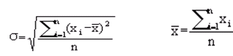
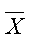
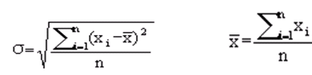
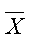

已知N个正整数：A1、A2、……、An 。今要将它们分成M组，使得各组数据的数值和最平均，即各组的均方差最小。均方差公式如下：
,其中σ为均方差，是各组数据和的平均值，xi为第i组数据的数值和。
| F.A.Qs | Home | Discuss | ProblemSet | Status | Ranklist | Contest | 入门OJ | ModifyUser Xeonacid | Logout | 捐赠本站 |
|---|
已知N个正整数：A1、A2、……、An 。今要将它们分成M组，使得各组数据的数值和最平均，即各组的均方差最小。均方差公式如下：
,其中σ为均方差，是各组数据和的平均值，xi为第i组数据的数值和。
对于全部的数据，保证有K<=N <= 20，2<=K<=6